Ceylon cinnamon
Quills, cut sticks and powder; grade and origin documentation subject to verification.
Quills · Powder · Retail packs
Request sourcing / sample optionsSOURCING CATALOGUE
Explore 18 sourcing possibilities across Ceylon spices, coconut ingredients, cocopeat and tea. Choose a product to start a brief with the sourcing desk.
Each product is a starting point for a supplier-matched quotation. Actual specifications, minimum quantities and certifications are confirmed on request.
Showing all 18 product possibilities
Quills, cut sticks and powder; grade and origin documentation subject to verification.
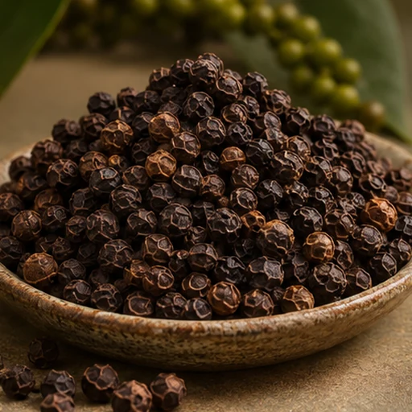
Whole black pepper and ground pepper for ingredient and consumer-pack channels.
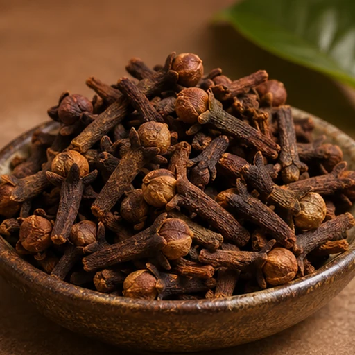
Whole dried cloves and ground formats, subject to batch specifications.
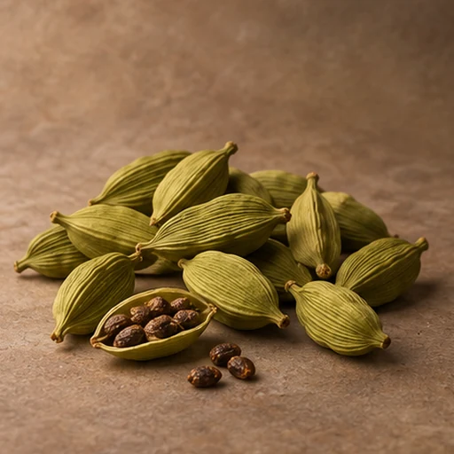
Green cardamom pods and ground spice for foodservice and branded retail.
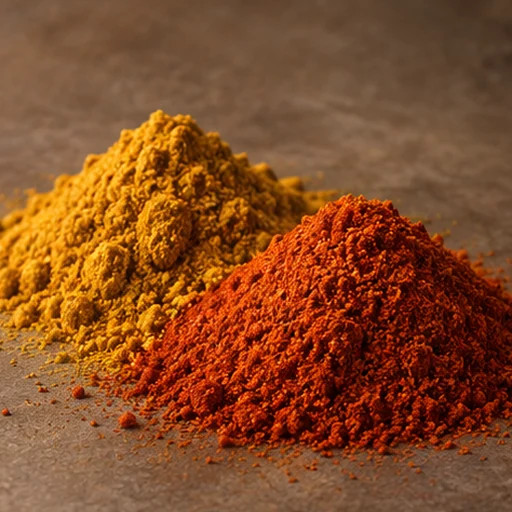
Recipe-led spice mixes developed with suitable processors for destination markets.
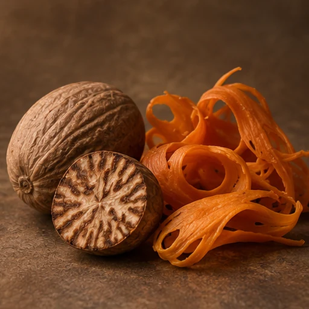
Whole nutmeg, mace and ground formats for culinary applications.
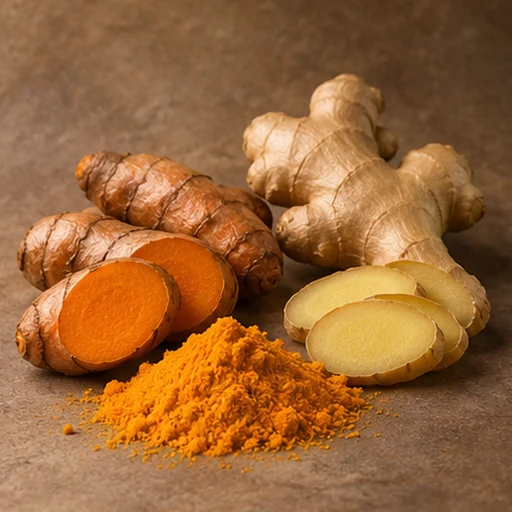
Selected dried, ground and blended ingredients subject to production capability.
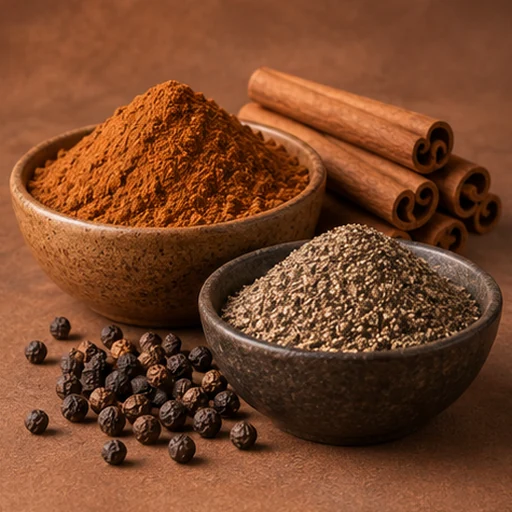
Custom seasoning applications with formula, testing and packaging to be agreed.
Edible coconut oil options for distributors and retail brands.
Coconut ingredients for foodservice, retail and food manufacturing.
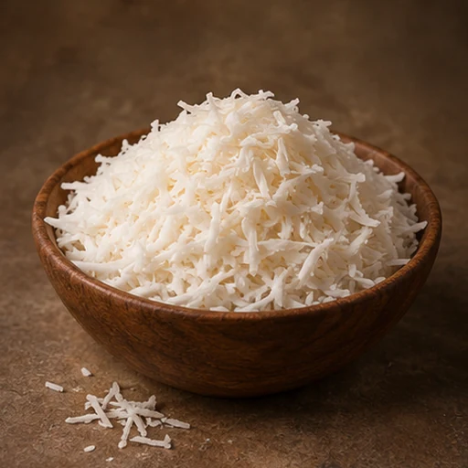
Fine and medium desiccated coconut grades for confectionery and food processing.
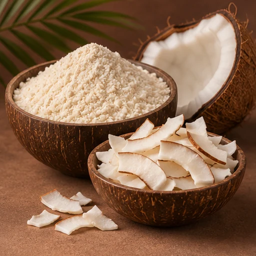
Coconut flour and snack-style coconut formats from qualified processing partners.
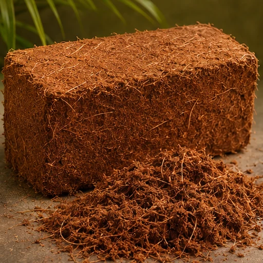
Compressed growing-medium blocks for horticulture and garden distribution.
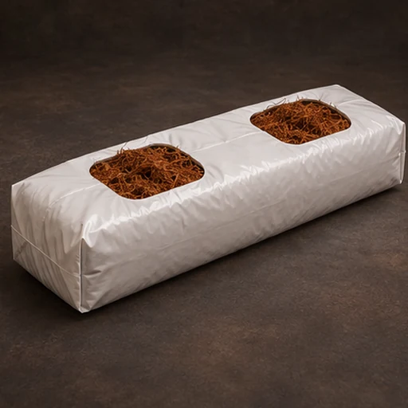
Substrate grow bags for commercial crops; dimensions and EC/pH tailored after testing.
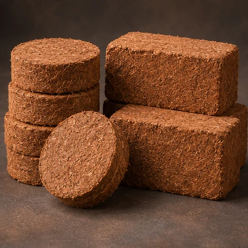
Compact coconut-coir growing products for retail gardening and propagation.
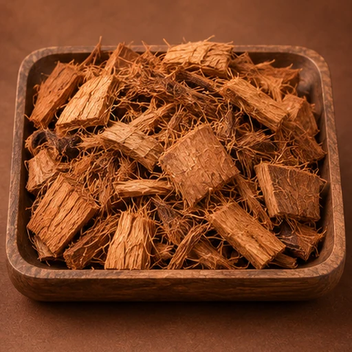
Coconut chips and tailored blends for nurseries and controlled cultivation.
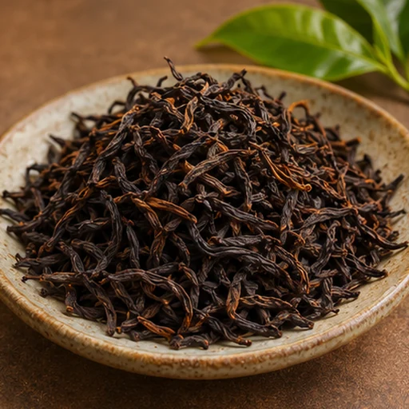
Selected Sri Lankan tea grades for wholesale, branded retail and specialist buyers.
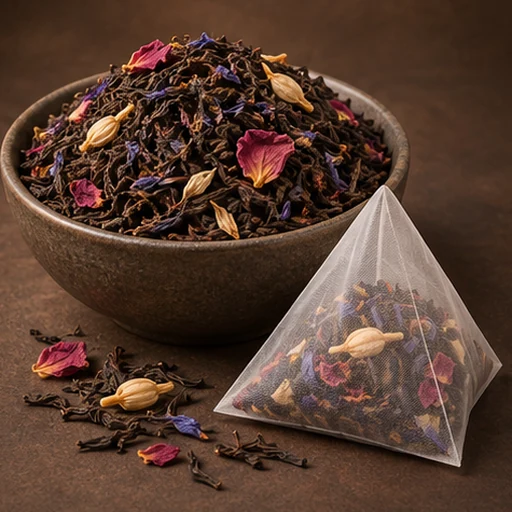
Flavoured and branded tea presentations through approved private-label packers.
Share your product specifications, packaging preferences and destination market. We will assess suitable sourcing routes before proposing next steps.
Answers use approved site information. For tailored commercial details, request a team response.